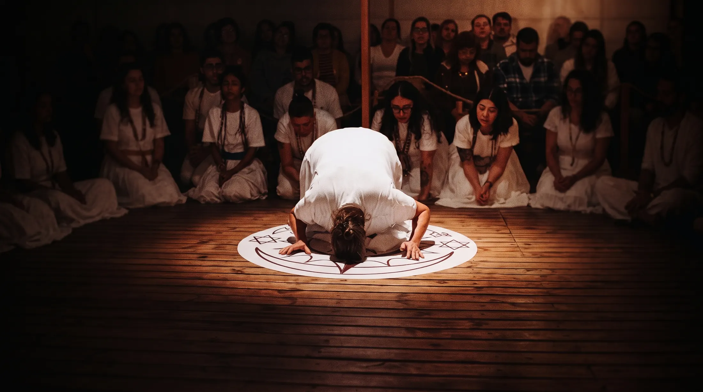
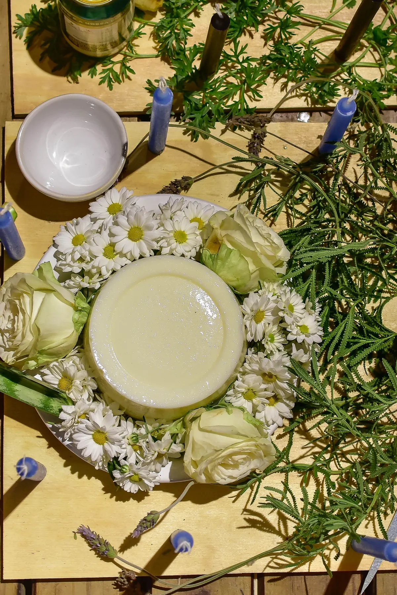
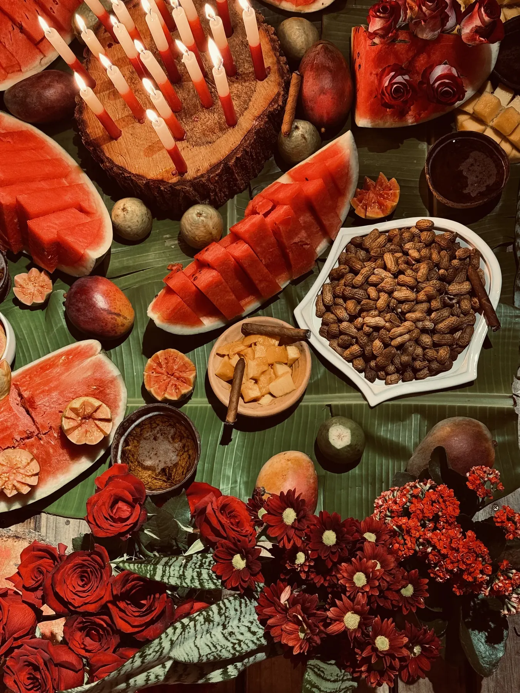
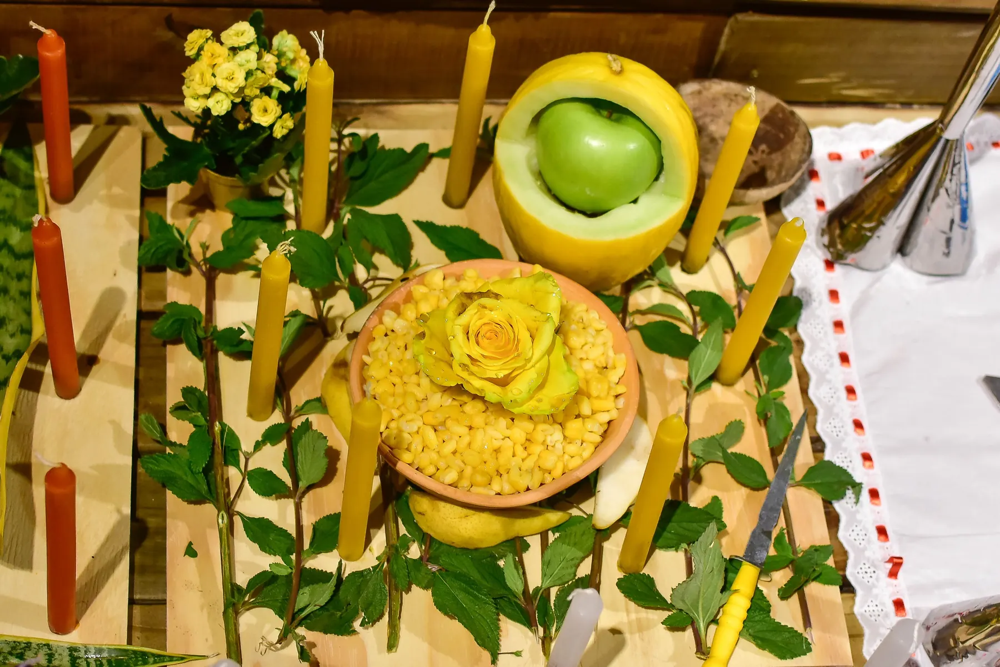
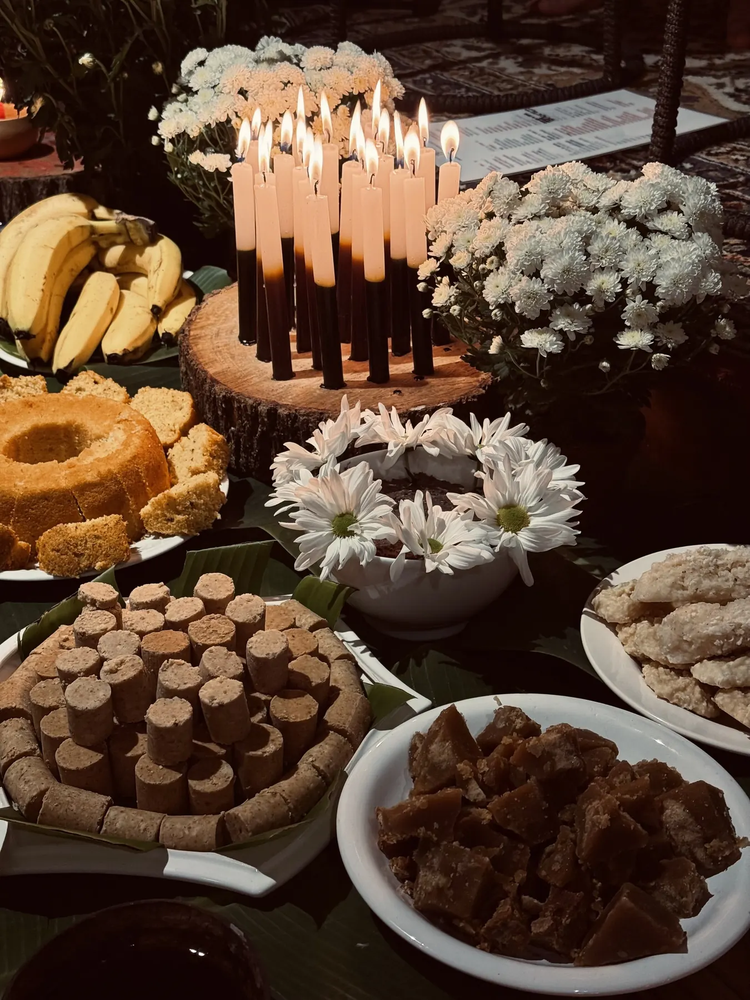
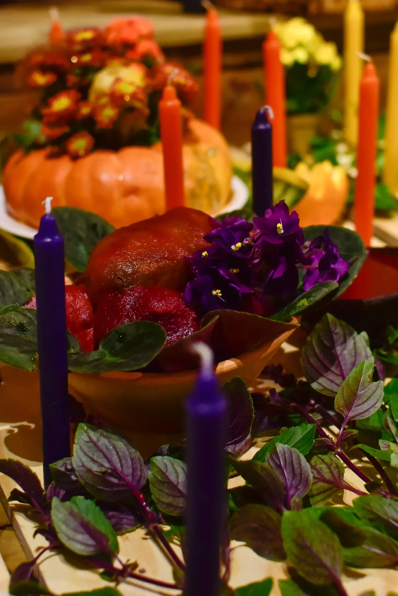
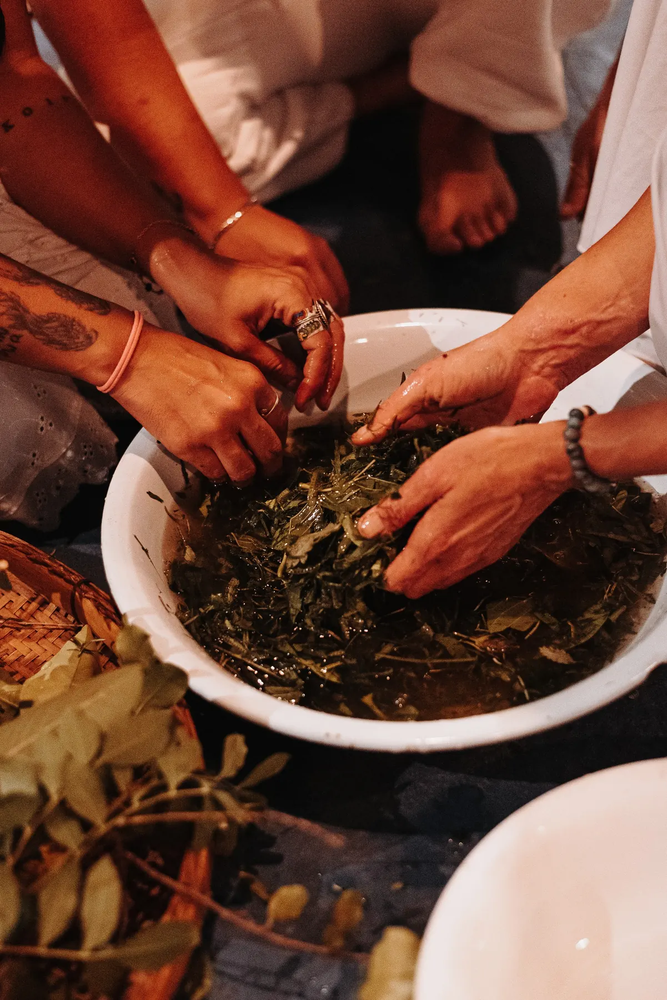

InícioFundamentos
Rituais e Preceitos
O sagrado no dia a dia: preceito, vela e oração, amalá e banho de ervas.
Quatro práticas que sustentam o equilíbrio.
Na Umbanda, o sagrado não é algo distante: a folha, a água, a vela e a própria mente são manifestações de energia vital. Sustentamos nosso equilíbrio com quatro práticas fundamentais.
O preceito
É o preparo que alinha o corpo, a mente e a energia antes, durante e depois dos trabalhos. Nos dias de gira, evitamos álcool, comida pesada, brigas e excessos. Não é castigo: é cuidado com o instrumento que os guias usam.
Ler sobre o preceitoA vela e a oração
Uma vela branca acesa ao lado de um copo de água abre um canal de luz e proteção com o seu Anjo da Guarda. É um gesto simples, para fazer em casa, com calma e pensamento bom.
Ler sobre a vela e a oraçãoO amalá
Frutas, flores, grãos e velas montados em círculo, como uma mandala, para agradecer aos Orixás e aos guias. Na CUCA, os amalás são montados no Jardim dos Orixás. Nunca é pagamento: é amor e gratidão.
Ler sobre o amaláO banho de ervas
As folhas, preparadas com intenção e oração, limpam o campo espiritual e devolvem o equilíbrio: acalmam o que está agitado e dão força onde falta. Cada erva tem um elemento: Ar, Fogo, Terra ou Água.
Ler sobre o banho de ervasO preceito.
O preceito é o preparo pelo qual alinhamos nossa energia antes, durante e depois dos trabalhos espirituais. Não é castigo, é responsabilidade.
Como um artesão precisa de ferramentas limpas e afiadas, os guias precisam de um médium em equilíbrio.
Zero álcool e ilícitos
Substâncias que alteram a consciência rompem a proteção e atraem baixa vibração.
Alimentação leve
Nos dias de gira, evite carnes vermelhas, comidas pesadas e excessos que sobrecarregam o corpo.
Reserva de energia vital
Resguarde sua energia vital e mantenha o recolhimento interior antes dos trabalhos.
Vigilância emocional
Evite discussões, raiva ou fofocas. Emoções densas atuam como ruídos na sintonia espiritual.
Por que o preceito existe
O preceito não é repressão, é responsabilidade espiritual. Ele mantém a energia limpa e estável. Facilita a sintonia com os guias. Protege o médium de interferências e desgastes. Nos dias de gira, a casa também pede resguardo nas relações sexuais, porque elas mexem intensamente com a energia vital. E pede cuidado com açúcar em excesso e energéticos, que geram picos e quedas de energia.
A vela e a oração.
Uma vela branca e um copo de água. É o ritual mais simples da Umbanda, e um dos mais fortes.
A vela é a luz da fé e da consciência desperta. A água recebe, filtra e conduz as energias. Juntas, abrem um canal entre você e o seu Anjo da Guarda, que é o seu próprio espírito, e os seus guias.
Passo a passo
- Escolha o lugarUm canto calmo e seguro da casa, longe de cortinas, madeira e qualquer coisa que pegue fogo. Use uma base de cerâmica ou de vidro.
- Prepare a vela e a águaUse vela branca, a não ser que o guia oriente outra cor. Ao lado, coloque um copo com água limpa.
- Acenda com intençãoAo acender, pense no seu Anjo da Guarda ou nos seus guias. Peça luz, proteção e equilíbrio, em silêncio ou numa oração curta.
- Deixe a vela queimar até o fimNão sopre a vela. Se precisar sair de casa, só acenda quando puder acompanhar.
- Devolva a água à naturezaQuando a vela acabar, despeje a água numa planta ou em água corrente, agradecendo. Use um copo de água novo na próxima vez.
Cuidados importantes
O que pensar
Diante da vela acesa, mantenha só prece, silêncio ou bons pensamentos. Nunca reclame nem pragueje: a vela leva tudo o que você coloca nela.
Vela de 7 dias
Só com autorização do guia dirigente da gira.
Com que frequência
Pode acender regularmente, não só em dia de gira.
A vela e a água formam um portal de luz, proteção e conexão em sua morada.
O amalá.
Na CUCA, o amalá é a oferenda montada com elementos naturais: frutas, flores, grãos e velas. Nunca é pagamento nem barganha. É um ato de amor, sintonia e gratidão às forças da natureza.
Os amalás e as entregas são montados no Jardim dos Orixás, ao lado dos tambores e dos oratórios de madeira.
A beleza física da oferenda deve ser o reflexo da sinceridade da sua oração interior.

Composição
Montado no Jardim dos Orixás com flores, frutas frescas, líquidos em coité e velas em números ímpares.
Zelo com o Jardim
O Jardim é solo sagrado: nunca deixamos plásticos, lixo ou fósforos queimados nos alguidares.
A regra de ouro
Sem intenção não há axé. A beleza da oferenda reflete a sinceridade da oração.




O amalá de cada Orixá e de cada linha
Na CUCA, a palavra amalá é usada para qualquer entrega. No Candomblé, amalá é a comida específica de Xangô. Cada elemento reflete a cor, o símbolo e a tradição de quem recebe: Iemanjá recebe manjar de coco, que fala do seu lado materno, e Omulu recebe pipoca, o deburu da tradição.
As entregas seguem uma lógica de mandala: elementos em círculo, flores e folhas, frutas abertas, velas em número ímpar e um elemento líquido, como água ou cerveja, de preferência num coité, a cuia feita do coco seco.
Regras do Jardim dos Orixás
Não jogar lixo, não tirar plantas, colocar os fósforos usados nos alguidares, não deixar objetos cortantes nos tambores, não tocar nas imagens e não subir na árvore.
Sem intenção não há axé
Ao usar o Jardim, faça silêncio e cuide de cada passo: da montagem, da reza e da intenção. Cuide para ser cuidado.
O banho de ervas.
O banho de ervas não é um ato comum de higiene. Ele limpa o campo espiritual e age por compensação: acalma o que está inflamado e desperta vigor onde há cansaço.
- A escolhaPeça licença à natureza. Escolha a erva conforme o elemento necessário: Ar, Fogo, Terra ou Água.
- O preparoMaceração em água fria para folhas frescas. Infusão abafada para flores secas ou cascas.
- A aplicaçãoDepois do banho de higiene, despeje devagar, em oração, respeitando se a erva vai ou não na cabeça.
- O retornoDeixe secar naturalmente e devolva as folhas coadas à terra, agradecendo.

Escolha e colheita
- Saiba a intenção antes de colher: limpeza, proteção, calma, abertura de caminhos.
- Colha de manhã. Ervas femininas, de natureza lunar, se colhem à noite; as masculinas, solares, de dia.
- Peça licença à natureza e ao Orixá da erva.
- Use tesoura ou faca limpa, colha só o necessário e agradeça.
Preparo
- Lave as folhas em água corrente.
- Maceração, a mais indicada para erva fresca: esmague as folhas com as mãos em água fria, depois junte água quente e coe.
- Infusão, para erva seca: aqueça a água quase até ferver e deixe as ervas descansarem nela.
- Prepare em silêncio ou em prece, com vela branca, num recipiente só para isso, nunca uma panela da cozinha.
Ambiente
- Lugar calmo, sem telefone e sem conversa: é um momento íntimo.
- Mente tranquila, sem reclamação.
- Descalço, quando possível.
Aplicação
- Primeiro o banho de higiene.
- Depois despeje o banho de ervas do pescoço para baixo. Na cabeça, só com orientação da casa ou da entidade.
- Despeje devagar, mentalizando o propósito, em oração, silêncio ou canto.
Depois do banho
- Deixe o corpo secar naturalmente, sem toalha, se possível.
- Fique alguns minutos em recolhimento.
- Devolva as folhas à natureza (jardim, pé de árvore), não ao lixo comum.
- Termine com uma oração de agradecimento.
O Congá em casa.
O Congá é o altar sagrado da Umbanda, espaço de firmeza, devoção e concentração. Em casa, ele pode ser montado de forma discreta e respeitosa. Não é lugar de exibição, é lugar de recolhimento e fé.
Uma vez por ano, os itens do Congá pessoal são levados à gira para serem reenergizados, normalmente na última gira do ano.

Discrição
Imagens pequenas, sem ostentação.
Pureza simbólica
Não misture com imagens de outras tradições.
Local adequado
Limpo, reservado e com pouca circulação de pessoas.
Luz e natureza
Prefira luz natural. Pedras e minerais devem ser recarregados ao sol.
Consagração
As imagens são cruzadas pela entidade dirigente da casa.
Te esperamos na segunda.
Gira aberta toda segunda-feira, às 19h30. Senhas a partir das 19h.